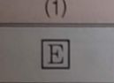
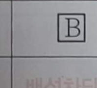
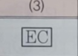
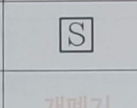
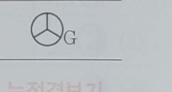
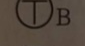
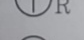
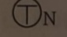
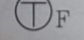

370.
각 그림 기호의 명칭을 쓰시오.
| (1) | (2) | (3) | (4) | (5) |
|---|---|---|---|---|
 |
 |
 |
 |
 |
(1) E 누전차단기 (2) B 배선차단기 (3) EC 접지센터 (4) S 개폐기 (5) G 누전경보기
371.
다음과 같은 소형 변압기 심벌의 명칭을 쓰시오.




TB 벨 변압기 TR 리모컨 변압기 TN 네온 변압기
TF 형광등용 안정기 TH HID램프용(고휘도 방전등용) 안정기